Concepts. Every mockup was generated from a real capture of the game at the fully zoomed-in camera (43 units up, 20° down) with the interface hidden, and from a sheet of the asset pack's actual prefabs. Roads and stalls keep their routes but drift a few percent: no image is a layout reference. Map imagery © Mapbox © OpenStreetMap.
Fully zoomed in, the map's far edge sits about 80 px below the true horizon, facing every direction, with fog on or off. Hills would have to be about as tall as the camera is high (43 units) to hide it.
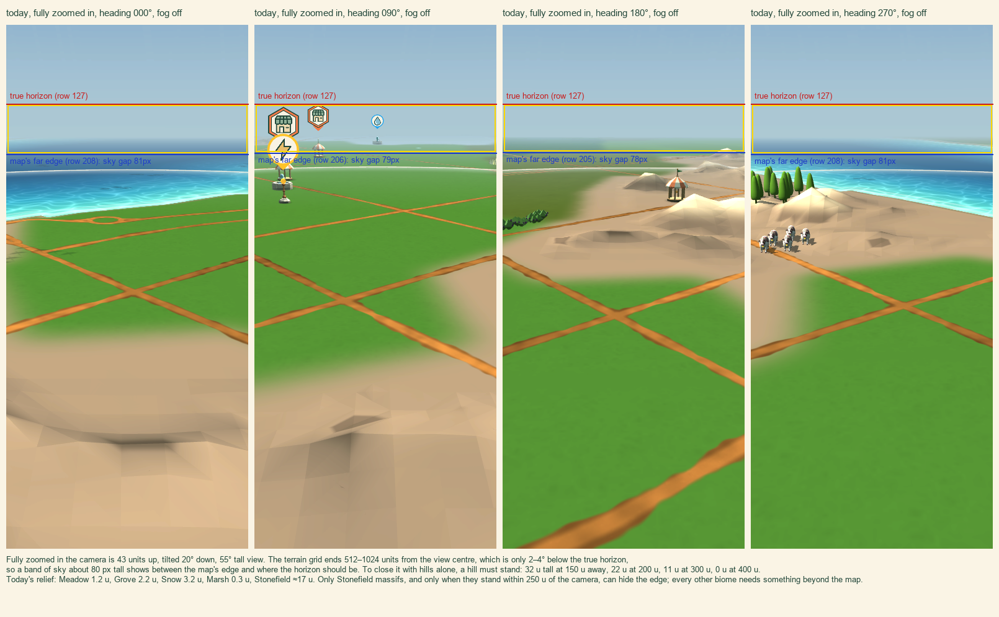
| # | idea | how it closes the seam | cost | risk |
|---|---|---|---|---|
| 1 | Horizon skirt: rings of far-hill silhouettes beyond the map, coloured by the edge biome | crests stand above the horizon at every zoom | ≲ 6k triangles, 3 draws | must be world-hashed or it swims when the view pans |
| 2 | Rim bowl: lift the outer terrain with distance, plus noise | the map's own edge rises to the horizon | a few shader lines | rim props and pins rise too; a quick first experiment |
| 3 | Far tiles: a coarse outer ring of height and colour only | edge moves to 1–1.5° under the horizon | generation and memory | still a thin seam |
| 4 | Horizon haze band, by angle, ±3° | edge lies inside the band | one shader term | adds no hills alone |
| 5 | Hills painted into the sky | edge meets painted hills of the same colour | a texture | no parallax |
| 6 | Far-sea plane where the edge is water | perfect at coasts | one quad | coasts only |
| 7 | Lower the zoomed-in camera (25 u instead of 43) | halves the band | one number | changes the feel |
| 8 | Cloud bank on the horizon | clouds cover the edge | sprites or meshes | reads as a wall if continuous |
Suggested direction: the skirt with the haze band, and the far-sea plane toward coasts. Try the rim bowl first, as a quick test of how it feels.
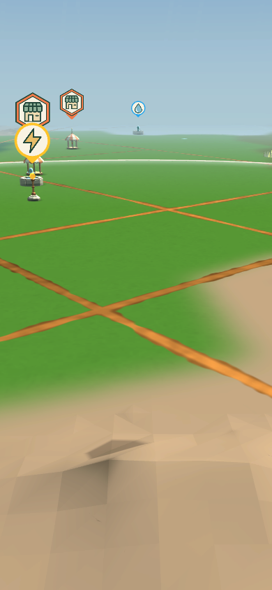
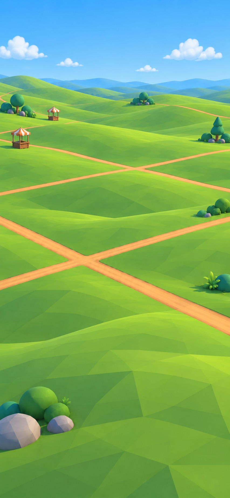
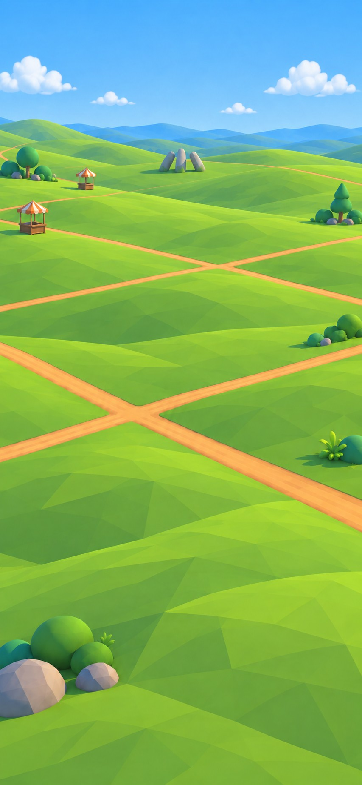
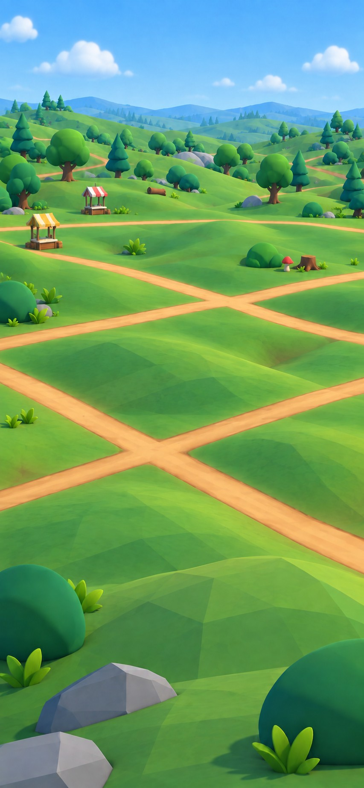
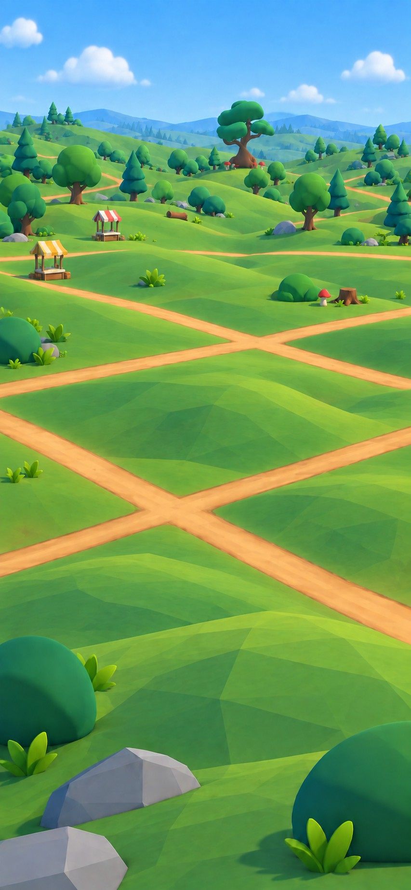
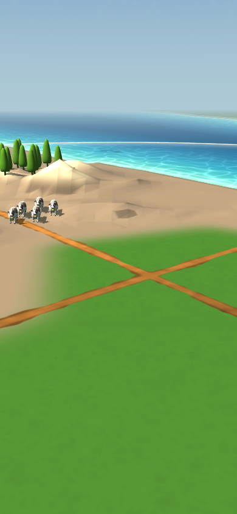
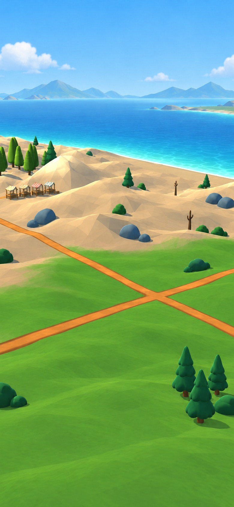
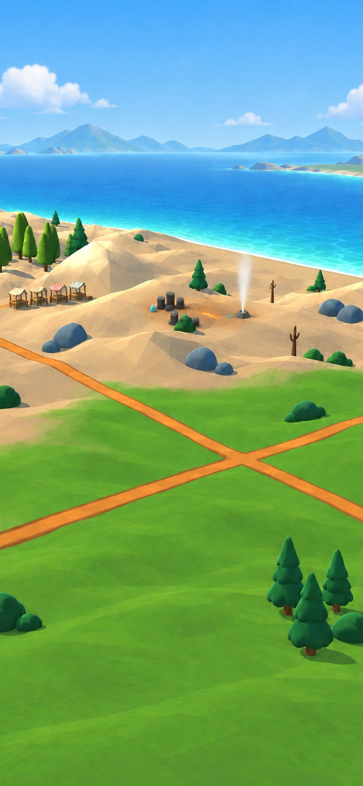
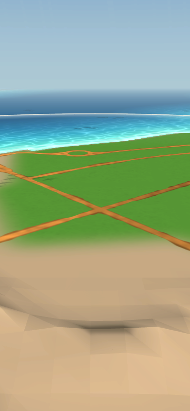
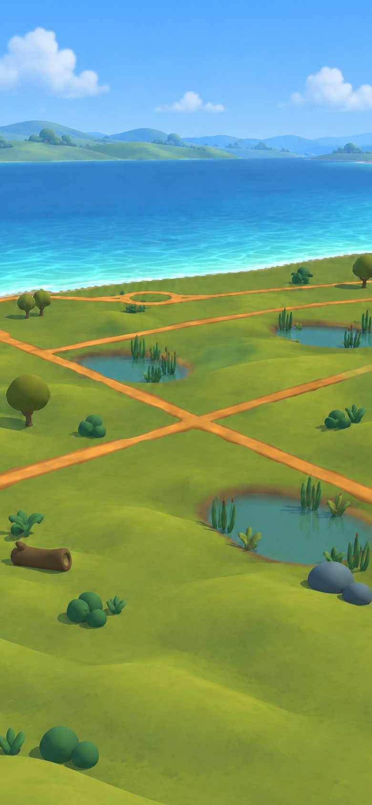
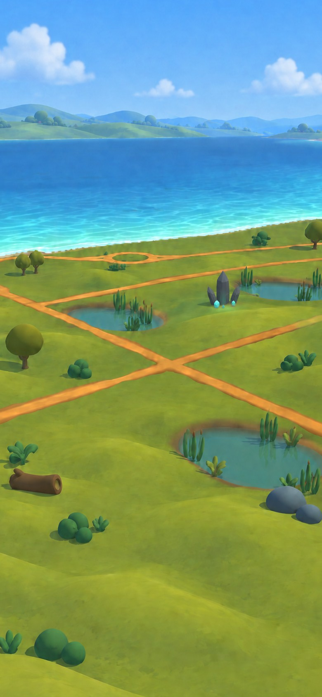
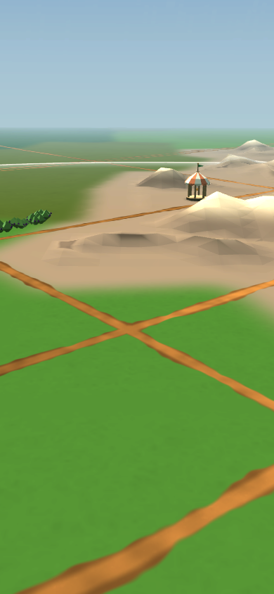
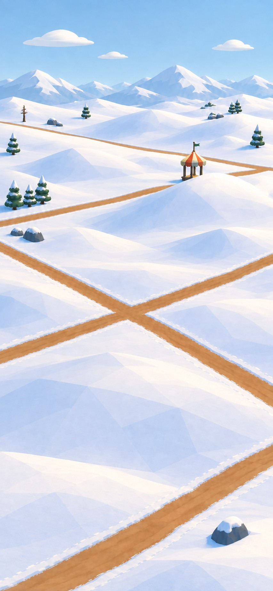
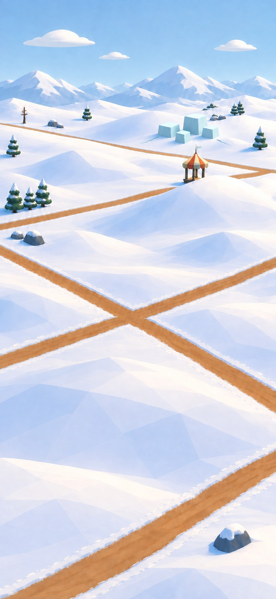
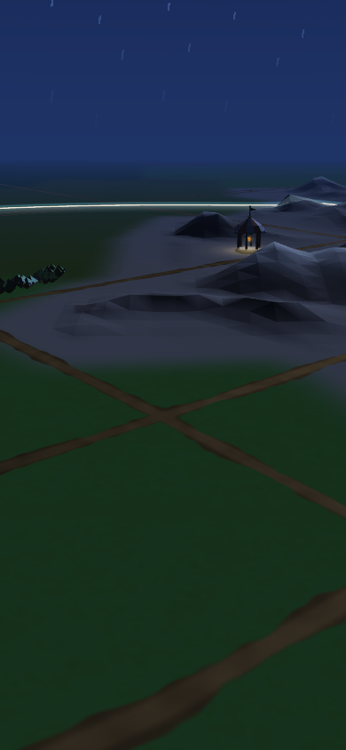
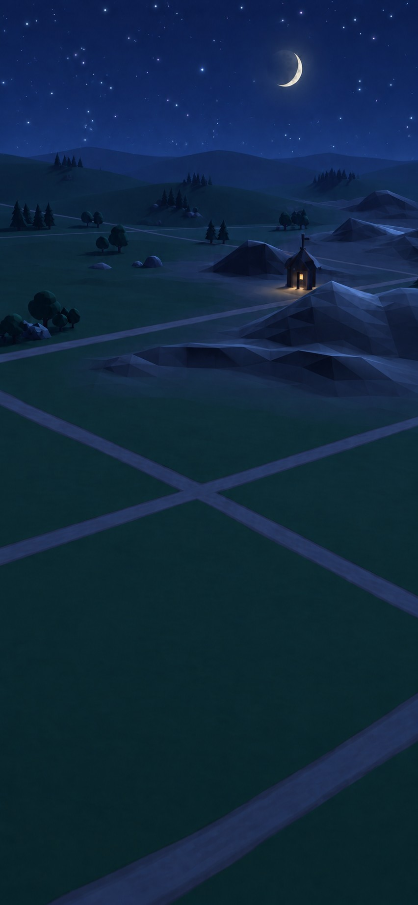
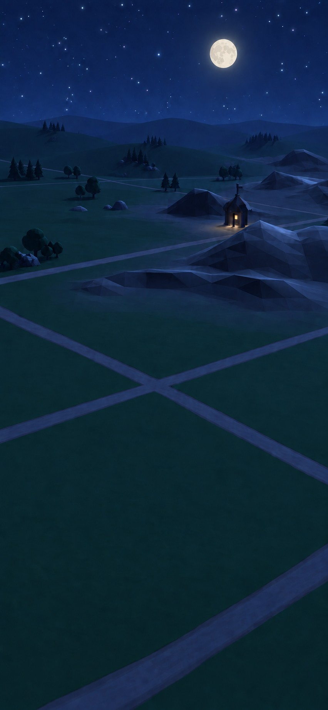
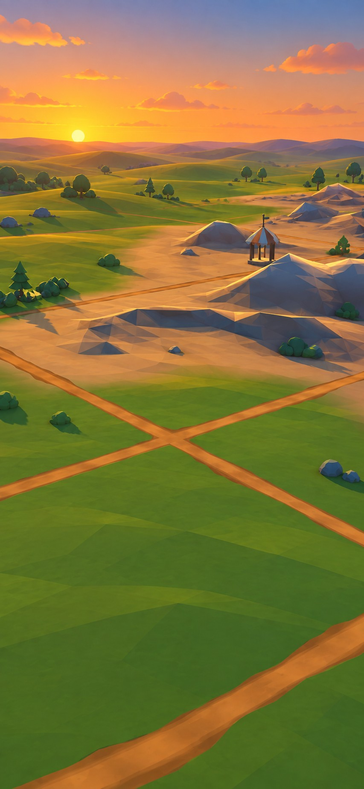
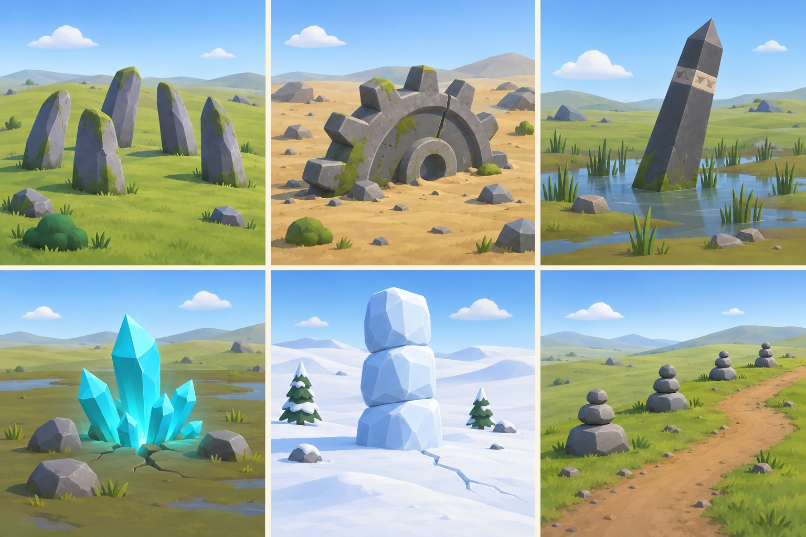
In order: The Sleepers; The Buried Gear; The Tilted Obelisk; The Crystal Bloom; The Ice Monolith (reads as a snowman here, so it needs squarer, offset blocks); The Cairn Road. Not yet drawn: a hot spring in Snow, a fairy ring in Grove, sea stacks, a sunken causeway, a lone dead giant tree, and fragments of fallen sky islands tying into the floating Hometown.
Rendered from the imported prefabs in the Editor on 2026-09-25, LOD0, with height in map units and triangle count. The generator was shown these sheets.
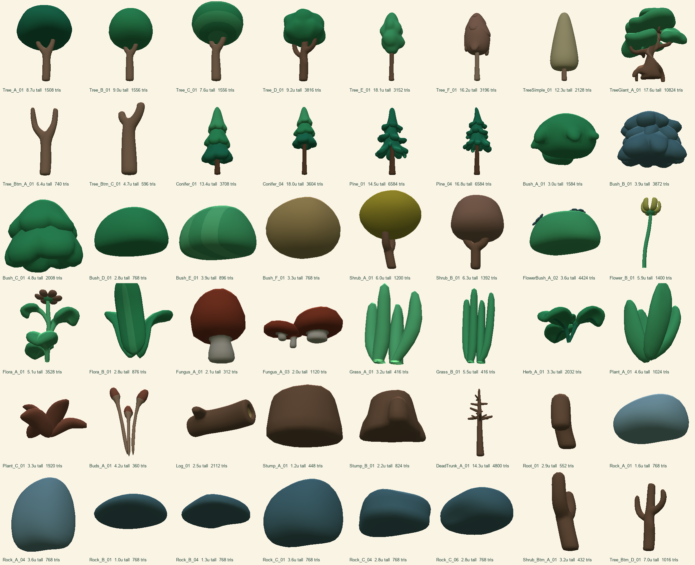
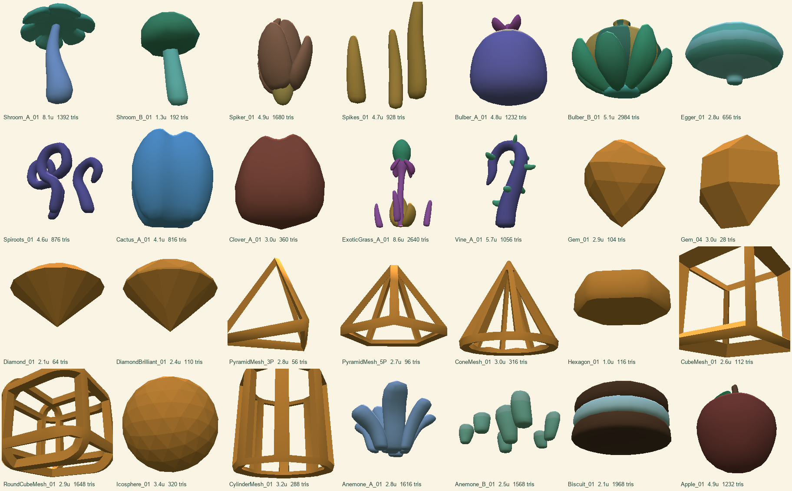